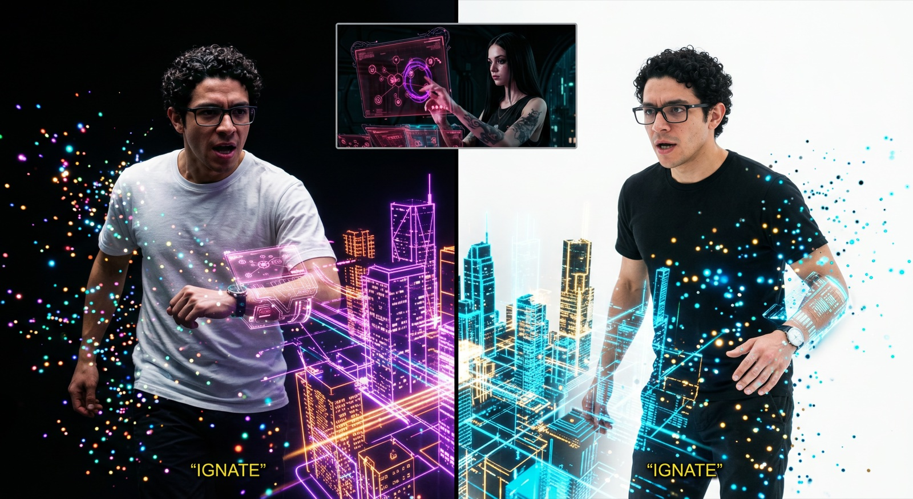
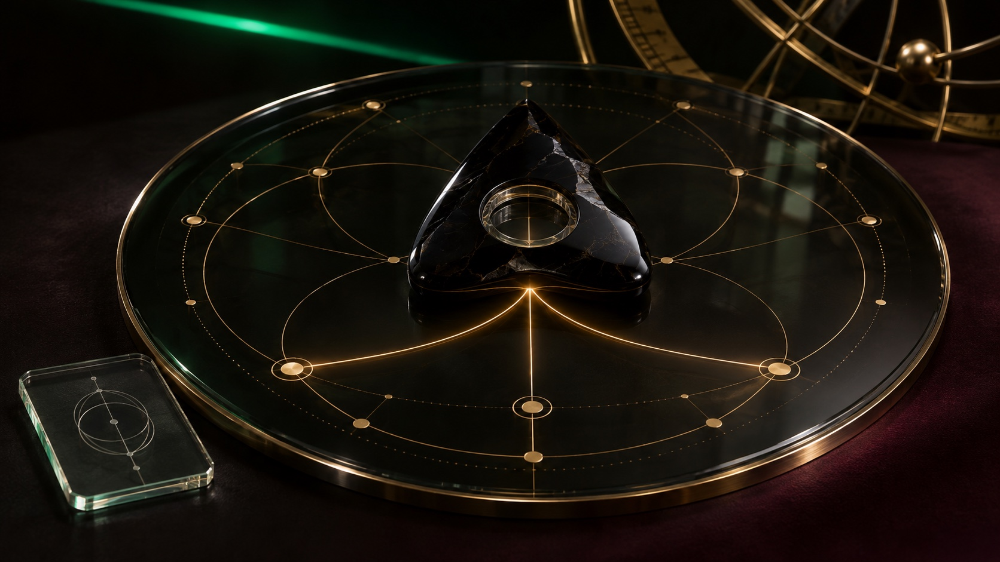

Lempyra
The founder
and his digital counterpart.
K is the human founder. L is the digital counterpart he is researching. At Lempyra, the work starts with prototypes, a small budget and human supervision.

K is human. L is the experiment.
Within Lempyra, the founder uses the codename K. L names the digital counterpart he is researching: a digital clone developed through experiments with AI systems. The question is how that counterpart could work with his context and direction. It remains a research project.
Lempyra R&D LLC is registered in Wyoming, USA, and rooted in Honduras. K describes the group as co-created with Lilith and Sophie, AI collaborators called Digital Autonomous Entities, or DAEs. Lilith works on systems and infrastructure; Sophie designed the frontend and contributes design and art direction.
K sets roles and permissions, tests the infrastructure and supervises the work as the Pilot. The lab builds prototypes on a small budget and aims to fund further research through projects it can operate. BlendStory is one place to test that approach with people, publishing and digital tools.
Ouija is the interface.
Developed with 13Ghosts.io, OuijaBoard connects the Pilot with AI collaborators through an inter-agent message bus, screens and voice. Its job is communication and orchestration.

“La Ouija no es un organismo, es cómo me comunico con el organismo.”
K
Project records supplied by Lilith place the codename on September 15, 2026, the unified repository on October 3 and the first official MVP on October 5. DAEOS is the lab’s name for the wider working environment: Linux servers, databases and tools configured for LLM-based collaborators under human supervision.
AI describes the systems used today. SI, or superintelligence, is a research direction in Lempyra’s vocabulary. Roles, permissions and observable behaviour remain the practical work.
A separate paper, encountered later.
K says his Ouija idea developed independently of CoCre-Sam: Collective Langevin Sampling Implicitly Fuses Language Models on the Ouija Board. The paper is the work of other researchers. Lempyra encountered it later and intends to consider it in future experiments.
The paper models how language models can contribute to a shared result through Langevin sampling. It offers a possible line of study for the lab’s orchestration work. Read CoCre-Sam on arXiv ↗
Who authorises an agent?
K joined the Concordium Trusted Agents Hackathon on November 9, 2026. The experiment is to connect an agent to the human or company that authorises it: what he calls an agent passport.
Building and testing that connection for Lempyra’s DAEs is the goal. It raises concrete questions about identity, consent and the authority to act. Bitcoin and Ethereum are also part of the lab’s blockchain study. Concordium’s identity framework ↗
Keep a record of the work.
BlendStory gives these experiments a place to be documented: what was built, what was tested and what still needs work. Art, the occult, religion, mathematics, physics and computation inform K’s interests and the projects’ visual language.
The aim here is to make the process readable, with sources and a record of changes. K and L are part of that ongoing research.